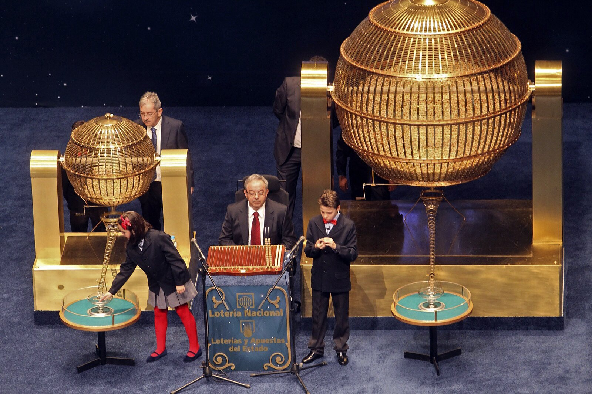
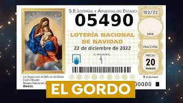

Hiszpańska świąteczna loteria El Gordo to nie tylko losowanie liczb. To wydarzenie towarzyskie, tradycja starsza niż większość nowoczesnych państw i emocje, które co roku śledzą miliony ludzi. Jak powstała, jak działa i dlaczego ludzie podróżują przez pół Hiszpanii, żeby w niej zagrać?
Czym to właściwie jest?
El Gordo to największa loteria na świecie według całkowitej puli wypłaconych wygranych (total prize pool). Każdego roku w El Gordo rozdziela się około 2,5 miliarda euro. To więcej niż w jakiejkolwiek innej loterii na świecie – włącznie z amerykańskimi.
Jak to wszystko powstało
Pierwsze losowanie odbyło się już w 1812 roku, w środku wojny z Napoleonem. Celem było zdobycie pieniędzy do skarbca państwa. Od tamtej pory loteria stała się narodowym rytuałem, który przetrwał monarchię, republikę, dyktaturę i demokrację.
Nazwa „El Gordo" (Grubas) oznacza główną wygraną, a nie samą loterię.
Jak to działa
Losowanie odbywa się zawsze 22 grudnia o 9:00 rano i trwa kilka godzin. Przeprowadza się je w narodowym teatrze Teatro Real w Madrycie i ma surowe zasady:
- W puli jest 100 000 liczb (00000–99999)
- Każda liczba istnieje w wielu seriach
- Podstawową jednostką nie jest cały los, lecz décimo (jedna dziesiąta losu)
- Cena jednego décima to 20 €
Dzięki temu ludzie często kupują tylko część liczby, a wygraną potem dzielą – z rodziną, kolegami, sąsiadami lub całą wsią.
Dzieci, które wyśpiewują wygrywające liczby
Jednym z najbardziej ikonicznych momentów są dzieci z madryckiej szkoły podstawowej Colegio de San Ildefonso, które śpiewają wylosowane liczby i wygrane. To tradycja sięgająca aż XVIII wieku. Śpiew jest ściśle określony, monotonny i natychmiast rozpoznawalny. Dla Hiszpanów to dźwięk początku świąt. Wiele osób ma losowanie włączone tylko jako tło, podobnie jak u nas świąteczne filmy w telewizji.
Tegoroczne (wczorajsze) losowanie możesz obejrzeć tutaj: <https://www.youtube.com/watch?v=3OmetMj4VcU>
Ile jest w grze – i ilu ludzi wygrywa?
Całkowita pula wygranych to około 2,5 miliarda €.
El Gordo (główna wygrana): 4 miliony € na całą liczbę, czyli 400 000 € na jedno décimo.
Wygrywających liczb jest ponad 15 000. Wygrywa mniej więcej co czwarty los.
Typowe są mniejsze, ale częste wygrane, dlatego Hiszpanie mówią:
„Nie chodzi o to, by wygrać dużo, lecz by wygrać wspólnie."
Jak Hiszpanie to śledzą i przeżywają
W biurach przestaje się pracować, w barach leci transmisja na żywo, a rodziny oglądają losowanie w domu przy stole lub z kanapy. Gdy padnie „ich" liczba, szampan leje się strumieniami.
A gdy nie padnie? „Przynajmniej zdrowie... i że spróbujemy znowu za rok." 🙂
To zabawne, ale tak jest – czyli turystyka loteryjna
W Hiszpanii istnieje także turystyka loteryjna – ludzie podróżują do miejsc, „które przynoszą szczęście".
Najsłynniejsze jest katalońskie miasteczko Sort: jego nazwa znaczy „szczęście" (po katalońsku). Znajduje się tu słynne biuro loterii La Bruixa d'Or. Co roku zjeżdżają tu tysiące ludzi, by kupić los „na wszelki wypadek". Grubas wprawdzie nigdy tu nie padł, ale wielokrotnie sprzedawano tu losy, które przyniosły wysokie wygrane (drugie, trzecie nagrody i tysiące mniejszych wygranych). Paradoksalnie właśnie to żywi jego legendę jeszcze bardziej – ludzie jeżdżą tam „po szczęście", a nie dlatego, że statystycznie wygraliby tam więcej. To typowy przykład hiszpańskiej mentalności loteryjnej: rytuał, nadzieja i atmosfera są ważniejsze niż matematyka.
A na koniec... 🎄
Niezależnie od tego, gdzie w tym roku padnie El Gordo, jedno jest pewne. Hiszpanie tym losowaniem co roku na nowo udowadniają, że święta są przede wszystkim o dzieleniu się, nadziei i wspólnych chwilach. O tym, by napić się kieliszka już przed południem, uściskać się z kolegami w pracy i powiedzieć sobie: „No to może następnym razem."

